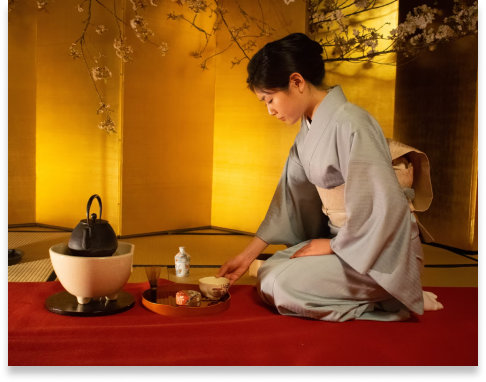

Cho đến nay có rất nhiều nhà nghiên cứu ở Nhật Bản cũng như các nước khác nghiên cứu về Trà đạo Nhật Bản, nhưng hầu hết đều dừng ở mức độ mô tả về trình tự, về chất liệu, hình dạng của dụng cụ pha và uống, về kiến trúc và nội thất của phòng trà …

Đến giữa thế kỷ XIV (thời Muromachi), việc uống trà được phổ biến đến giới bình dân. Cách thức uống trà của người Nhật Bản giống như người Trung Hoa, chủ yếu là thưởng ngoạn phong cảnh, đối ẩm, thưởng thức vị trà. Tại những vùng trồng trà, đến nay hàng năm vẫn diễn ra các cuộc thi uống trà toucha để tìm ra các loại trà ngon.
Hưởng ứng tâm tưởng ấy, vào cuối thế kỷ XVI (thời Azuchi Momoyama), một người Nhật Bản là ông Senno Rikyu (1522-1591) đã kết hợp việc uống trà với các triết lý Thiền hình thành một trường phái có cách pha và uống trà khác biệt với thông thường. Thứ nước trà được pha chế ra và dùng để uống của trường phái này được gọi là cha no yuu. Cách thức pha và uống cha no yuu của trường phái này dần dần được trình tự hoá thành một nghệ thuật, được gọi là sadou, nghĩa là Trà đạo. Từ đó đến nay, nghệ thuật này càng được hoàn thiện và phổ biến, trở thành một nét văn hoá đặc trưng của người Nhật Bản.
Đối với nghi thức Trà đạo Nhật Bản, việc pha trà và uống trà là hai phần không thể tách rời. Người quan trọng nhất trong một nghi thức trà đạo là người thực hiện việc pha trà. Các thao tác của người pha trà thể hiện được cái tâm của người pha trà. Cái tâm này sẽ làm cho thao tác pha trà chuẩn mực hơn hay không cũng như là cuốn hút được những người tham gia nghi thức này hay không. Người pha trà đóng vai trò chủ thể chính thức của một nghi thức trà đạo. Còn người uống trà chỉ là chủ thể phụ của một nghi thức Trà đạo, hoà cùng chủ thể chính.
Trong khi đó, đối với nghi thức Trà đạo Nhật Bản, hương vị của trà không đóng vai trò chính như cái tên được gắn lên của nó. Chỉ có một loại trà duy nhất dùng cho nghi thức này là bột trà xanh matcha. Đây là loại trà có vị đắng, và ở dạng bột. Trà chỉ đóng vai trò phụ trong nghi thức Trà đạo Nhật Bản, bởi vì vị đắng của trà rất phù hợp với tôn chỉ trách xa sự xa hoa của Thiền, sẽ hỗ trợ cho việc tập trung suy ngẫm của các chủ thể uống trà.
Người tham gia vào nghi thức Trà đạo cũng đã uống được ngụm nước trà, tuy nhiên trong chén trà của họ không chỉ có nước trà thông thường, mà đã được pha vào đó tinh thần của Thiền. Người ta gọi đó là “Trà Thiền Nhất Vị”.
Thông thường, thời điểm uống trà thường là buổi chiều tối, khi con người đã kết thúc một ngày làm việc, đến lúc đàm đạo. Buổi chiều tối cũng là lúc mát trời, nhiều cảnh đẹp hiện ra lúc hoàng hôn, cũng là lúc quần tụ gia đình. Ngoài ra, việc uống trà cũng được thực hiện vào lúc tàn các buổi tiệc, lúc xem ca múa… những lúc này không nhất thiết là vào chiều tối.
Tại Nhật Bản, nghi thức Trà đạo được thực hiện bất cứ thời gian nào trong ngày, bởi vì ảnh hưởng Thiền nên yếu tố thời gian không là yếu tố quan trọng khi thực hiện nghi thức Trà đạo. Cái quan trọng chính là lúc các chủ thể cần có sự tập trung, có sự tĩnh lặng, thế là nghi thức Trà đạo Nhật Bản được thực hiện.
Khi đàm đạo thông qua uống trà thông thường, mọi người cần một không gian thoáng đãng, họ cần không gian đẹp để việc thưởng thức trà mang lại thêm niền sảng khoái. Không gian đẹp cộng với sự bày trí sang trọng đem lại sự tự tin và hãnh diện cho chủ nhà. Không gian đẹp, cảnh đẹp, bộ dụng cụ uống trà đẹp thì chắc chắn trà sẽ rất ngon.
Mục đích Thưởng thức, thưởng ngoạn, đàm đạo, giao tế. Tập trung tĩnh tâm, suy ngẫm, hòa hợp thiên nhiên
Ngày nay, nghi thức Trà đạo Nhật Bản được thực hiện phổ biến mọi nơi tại Nhật Bản. Đối vời người Nhật, nghi thức Trà đạo hiện nay chủ yếu mang ý nghĩa là giúp con người giảm áp lực công việc… Việc thực hiện trình tự pha và uống cũng được đơn giản hoá, chỉ có điều là phải được thực hiện trong phòng kiểu Nhật.
Vì uống trà nhiều thường sẽ dẫn đến việc bị say trà, mặt khác, vị của cha no yuu là vị đắng, nên thường thì trước khi uống, người bình thường sẽ được mời ăn một chút bánh ngọt (Omogashi hoặc higashi).
Vì được hình thành dựa trên triết lý Thiền, nên thật ra nghi thức Trà đạo Nhật Bản nhằm thể hiện các triết lý Phật giáo Thiền tông
Theo triết lý Thiền, thì con người là một tiểu vũ trụ nằm trong đại vũ trụ là thế giới tự nhiên. Cuộc sống của con người có rất nhiều điều chưa lý giải được nguyên nhân và bản chất. Để lý giải được những thắc mắc, con người phải hoà tâm trí mình vào tự nhiên – nói cách khác là để tiểu vũ trụ hoà vào đại vũ trụ – bằng cách tĩnh lặng tâm trí, không bị chi phối bới bên ngoài.
Ý nghĩa đích thực của “Trà đạo” trong văn hoá Nhật Bản phải được hiểu là “Hoà hợp con người với thiên nhiên qua thao tác pha và uống trà”.